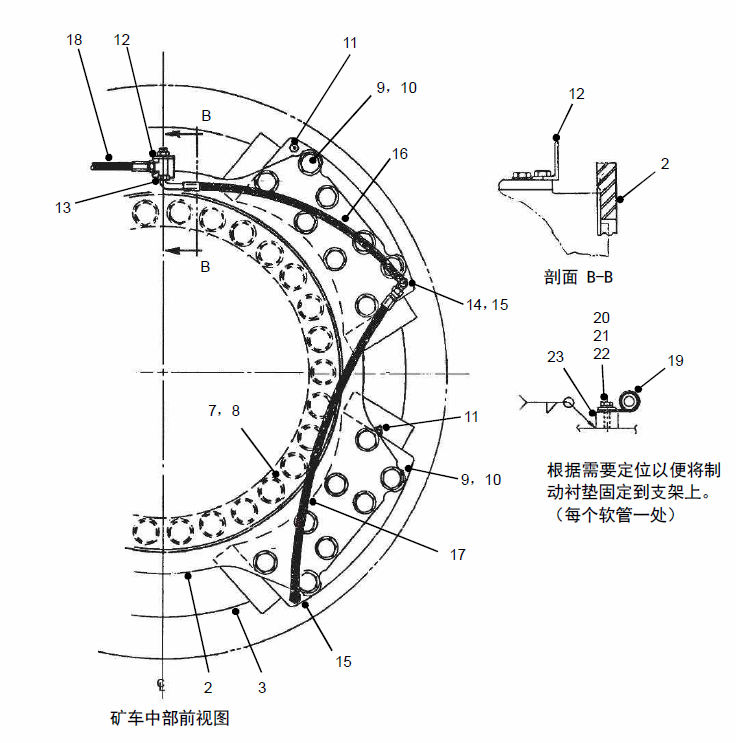
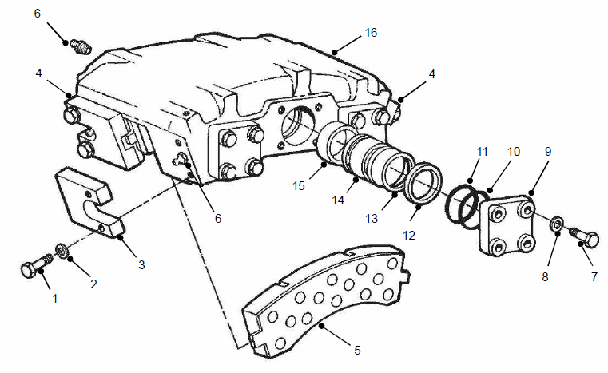
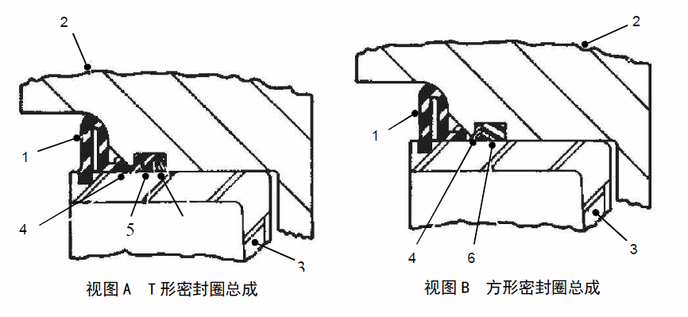
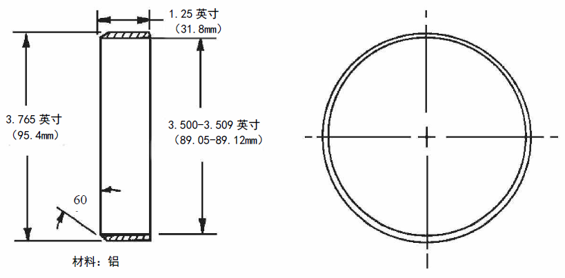
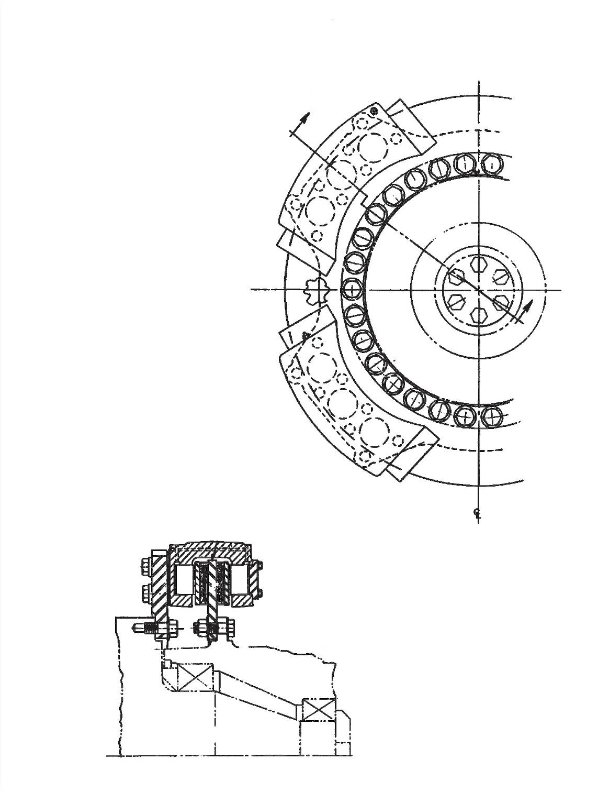
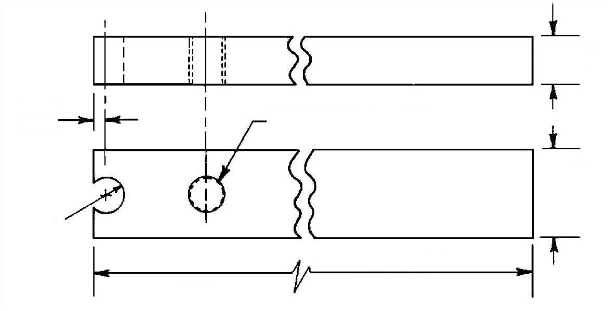

前制动总成. · FRONT BRAKES ASSY
Рис. 1. Монтажная схема суппорта (стр. 2 из 2)
Передний тормоз
ПРЕДУПРЕЖДЕНИЕ
Следуйте указаниям по ремонту тормозной системы, приведенным в настоящей инструкции, уменьшите контакт с волокнистой пылью, волокнистая пыль является потенциальной причиной рака и заболеваний легких. Основной целью соблюдения указаний является предотвращение загрязнения воздуха или непосредственного контакта с кожей или другими органами. Избегайте вдыхания загрязняющих веществ, мойте руки и другие открытые части тела после контакта. Всегда следуйте определенным правилам, действующим на месте производства работ.Описание и расположение (см. рис. 1)
В конструкции передней тормозной системы применяются суппорт и тормозной диск. Они устанавливаются на двух передних подвесках/передних колесах в сборе. На каждом колесе используется один диск с 4 суппортами.
Управление
Масло под давлением из гидравлической системы поступает через входное отверстие тормоза. Давление гидравлического масла заставляет поршень двигаться наружу и прижиматься к опорной пластине и тормозной колодке в сборе, эта сборочная единица также прижимаются к тормозному диску, таким образом создается эффект торможения. Когда давление сбрасывается, исчезает тормозная сила, действующая на тормозной диск.
ПРИМЕЧАНИЕ: Все 6 отверстий в поршнях соединяются с внутренними каналами, обеспечивающие свободное движение потока гидравлического масла между поршнями. Это дает возможность всем поршням с одинаковой силой толкать опорные пластины и тормозные колодки в сборе до достижения максимального тормозного усилия.
Спецификация
1
Болт
7
Болт
13
Стопорное кольцо
2
Шайба
8
Шайба
14
Поршень
3
Упорная пластина
9
Торцевая крышка
15
Втулка
4
Упорная пластина
10
Стопорное кольцо
16
Торсионная подве
ка
5
Опорная пластина и тормозная колодка в сборе
11
Уплотнительное кольцо
17
6
Дренажный клапан
12
Кольцевое уплотнение
18
Рис. 2. Суппорт в сборе
Спецификация
1
Втулка
3
Поршень
5
Т-образное уплотнительное кольцо
2
Торсионная подвеска
4
Сто
орное кольцо
6
Кольцевое уплотнение
Рис. 3. Установка уплотнительных элементов
Ремонт и регулировка (см. рис. 2)
Периодический ремонт каждого тормоза в сборе включает следующими виды работ:
1. Проверить правильность установки надежность фиксации болтов всех суппортов и тормозных дисков. Повторно затянуть или заменить по мене необходимости.
2. Проверьте все втулки (15), убедиться в правильности их установки и отсутствии признаков утечек или коррозии. Отремонтируйте или замените по мере надобности.
3. Удалить воздух из тормоза в соответствии с установленным порядком. Проверить наличие/отсутствие влаги или грязи.
4. Проверьте опорную пластину и тормозную колодку в сборе на наличие износа или повреждений. Если тормозная колодка в сборе повреждена, обнаружена масляная грязь или толщина фрикционного материала составляет менее 0,125 дюймов (3 мм), то следует заменить.
ПРЕДУПРЕЖДЕНИЕ
Не допускается отсоединение любых трубопроводов или снятие любых компонентов до полного сброса давления в системе.5. Проверьте тормозной диск на наличие признаков износа или повреждений. Если он серьезно поврежден или минимальная толщина тормозного диска составляет менее 0,700 дюймов (17,2 мм), то следует заменить.
ПРЕДУПРЕЖДЕНИЕ
Если тормозные колодки или тормозные диски изношены до предела и не заменены на новые, то это может привести к выходу из строя тормоза и повреждению оборудования.Опорожнение тормоза
Само по себе опорожнение тормоза является процессом удаления воздуха и других примесей из гидравлического масла в тормозной системе.
Выпуск осуществляется путем нажатия педали тормоза или активации стояночного тормоза.
Более подробную информацию о порядком для каждой системы см. в главе 050 «Гидравлическая система».
Перед приведением в действие следует удалить остаточный воздух и другие примеси из гидравлического масла, это очень важно.
ПРИМЕЧАНИЕ: В процессе опорожнения необходимо удалить гидравлическое масло, расположенное между тормозными колодками и тормозным диском. Присоединить полый шланг для слива гидравлического масла в емкость во избежание загрязнения компонентов гидравлическим маслом.
ВНИМАНИЕ
Если не указано иное, то в тормозной системе должно использоваться только гидравлическое масло на минеральной основе SAE10 или его эквивалент. Не давите на тормозную систему, если суппорт в сборе не располагается на тормозном диске в сборе, кроме того, убедитесь в правильности установки тормозной колодки и других компонентов.
ПРЕДУПРЕЖДЕНИЕ
Гидравлическое масло может быть агрессивным. Следует избегать попадания масла в глаза или длительного контакта масла с кожей.Замена тормозных колодок (см. рис. 2)
ПРИМЕЧАНИЕ: Рекомендуется одновременно заменить все тормозные колодки всех суппортов двух передних колес.
Замена тормозных колодок производится в следующем порядке:
1. Остановить карьерный самосвал в безопасном месте, кроме использования фрикционной системы торможения, еще нужно надежно удерживать его в неподвижном состоянии другим подходящим методом.
2. Выключите все рабочие тормоза и стояночный тормоз. Удерживайте ТС в неподвижном состоянии.
3. Полностью сбросьте давление в системе гидравлического тормозного привода в соответствии с порядком, указанным в главе 050 «Гидравлическая система».
4. Снять болт (1), шайбу (2) и упорную пластину (3) с одного конца тормозного суппорта.
5. Снимите опорную пластину и тормозную колодку в сборе с тормозной головки.
ПРИМЕЧАНИЕ: Упорные пластины не могут быть взаимозаменяемыми. Наносить метки на пластины для обеспечения правильной повторной сборки.
6. Слегка откройте дренажный клапан. Не допускайте контакта гидравлического масла с опорной пластиной и тормозной колодкой или тормозным диском в сборе.
ПРИМЕЧАНИЕ: Рекомендуется слить гидравлическое масло в подходящую емкость, чтобы предотвратить контакт масла с другими компонентами тормоза.
ПРЕДУПРЕЖДЕНИЕ
Гидравлическое масло может быть агрессивным. Следует избегать попадания масла в глаза или длительного контакта масла с кожей.7. Вставьте гандшпуг между тормозным диском и поршнем. Вдавите каждый поршень обратно в отверстие в корпусе суппорта.
8. Закрыть отверстие дренажного клапана.
9. Установить новые опорные башмаки и тормозные колодки в сборе с каждой стороны, фрикционный материал должен направляться к тормозному диску.
ПРИМЕЧАНИЕ: На одну ось карьерного самосвала нельзя устанавливать тормозные колодки разных типов с целью достижения наилучшего эффекта торможения.
ПРЕДУПРЕЖДЕНИЕ
Запрещается смешанное использование новых и старых опорных пластин и тормозных колодок в сборе на одном и том же суппорте в сборе. Только используйте тормозные колодки, рекомендуемые NHL. Использование заменителей или нерекомендуемых тормозных колодок может вызвать снижение тормозного эффекта и привести к выходу из строя компонентов.10. Установите упорные пластины (3 и 4) обратно на посадочные места. (отверстие под болт должно находиться дальше от канавки на пластине, направляться во внешнюю сторону тормозного диска), убедитесь в надлежащем сопряжении канавки на пластине с лапкой опорной пластины и тормозной колодки в сборе.
11. Надежно зафиксировать упорные пластины болтами и шайбами. Смазать резьбу маслом SAE 10W или 30W и затянуть их до достижения момента 730-750 фут-фунтов (990 -1020 Н.м).
12. Неоднократно нажимая и отпуская педаль тормоза до тех пор, пока опорный кронштейн и тормозная колодка не соприкоснутся с тормозным диском.
13. Удалите весь остаточный воздух и загрязняющие вещества из системы в соответствии с порядком, указанным в главе 050 «Гидравлическая система».
14. Если шина с ободом в сборе была демонтирована, снова монтируйте в соответствии с порядком, указанным в главе 150 «Шина с ободом».
Притирка тормоза
При установке новых тормозных дисков или тормозных колодок всегда следует притереть (надежно закрепить) все тормоза. После ремонта тормозов и перед повторным вводом карьерного самосвала в эксплуатацию следует притереть тормоза. Несоблюдение порядка правильной притирки может привести к снижению тормозного эффекта и увеличения продолжительности торможения.
Появление дыма и неприятного запаха в зоне вокруг тормозов при температуре выше 350°F (173°C) в процессе притирки является нормальным. Появление густого дыма и искр при температуре выше 700°F (370°C) тоже является нормальным. Существует вероятность появления искр при температуре выше 900°F (480°C).
ВАЖНЫЙ ПРИМЕЧАНИЕ: В случае появления пламени, следует немедленно убрать источник огня и как можно скорее снова привести ТС в действие, чтобы погасить пламя. Пламя может появиться только в процессе выравнивания, при нормальном торможении не должно появляться пламя.
Установите ТС в ненагруженном состоянии, проводите испытание на выравнивание в зоне, где отсутствуют препятствия и люди. Тормозной путь в процессе выравнивания длиннее, чем обычно.
ПРИМЕЧАНИЕ: Опыт показал, что непрерывная работа двигателя на высоких оборотах холостого хода в период выравнивания поможет охладить электромотор-колеса.
Притирка переднего тормоза производится в следующем порядке:
a. Отключить задние тормоза карьерного самосвала.
Отсоедините трубку подачи масла от картера моста и плотно закройте устья.
ПРИМЕЧАНИЕ: Поскольку отключение задних тормозов может вызвать значительное увеличение тормозной пути. Будьте особенно осторожны при притирке. После завершения притирки передних тормозов следует немедленно повторно подключить задние тормоза. Перед завершением подключения всех тормозов и достижением нормальной работоспособности не допускается ввод карьерного самосвала в эксплуатацию.
b. Пусть карьерный самосвал движется со скоростью 5-10 миль/ч (8-16 км/ч), попеременно совершить торможение и растормаживание до тех пор, пока температура тормозного диска не достигнет 700-750°F (370-400°C).
Наиболее часто используемый метод заключается в следующем: пусть карьерный самосвал проедет с частично нажатой педалью тормоза 50 футов (15 м), затем отпустить педаль примерно 10 секунд, во всем процессе карьерный самосвал должен находиться в подвижном состоянии. Повторять данную процедуру до достижения требуемой температуры.
ПРИМЕЧАНИЕ:
1. Измерить температуру на поверхности тормозного диска с помощью пирометра или аналогичного прибора для измерения температуры на поверхности. После проезда 100 ярдов (90 м) следует измерить температуру на поверхности тормозного диска или измерить температуру вокруг него в соответствии с установленными требованиями.
2. Торможение передними колесами должно производиться на сухой дороге.
c. Пусть тормозной диск охлаждается до 350°F (173°C).
ПРИМЕЧАНИЕ: Процесс охлаждения занимает 30 минут, это зависит от температуры тормозного диска и окружающей среды. В течение этого периода рекомендуется медленно приводить карьерный самосвал в действие, чтобы помочь равномерно охладить компоненты тормоза. Следует выключить тормоз в течение всего процесса охлаждения.
d. Повторить шаг b, максимально допустимая температура тормозного диска составляет 800-850°F (425-455°C).
e. Охладите тормозной диск до 350°F (173°C).
f. Повторить шаг b, максимально допустимая температура тормозного диска составляет 900-950°F (480-510°C).
g. Охладите тормозной диск до 350°F (173°C).
h. Повторить шаг b, максимально допустимая температура тормозного диска составляет 1000-1050°F (535-565°C).
i. Охладите тормозной диск до 350°F (173°C).
j. Снова присоедините подводящий маслопровод задней тормозной системы и охладите тормозной диск до 225-250°F (107-120°C).
k. Удалите весь остаточный воздух из задней тормозной системы в соответствии с порядком, указанным в главе 050 «Гидравлическая система».
Демонтаж (см. рис. 1)
Снятие суппорта в сборе из карьерного самосвала производится в следующем порядке:
1. Остановить карьерный самосвал в безопасном месте, кроме использования фрикционной системы торможения, еще нужно надежно удерживать его в неподвижном состоянии другим подходящим методом.
2. Освободить все рабочие тормоза и включить стояночный тормоз.
3. Полностью сбросьте давление в тормозной системе в соответствии с системным порядком, указанным в главе 050 «Гидравлическая система».
4. Демонтируйте шину с ободом в сборе в соответствии с порядком, указанным в главе 150 «Шина с ободом».
5. Отсоединить гидравлические трубопроводы от суппорта в сборе. Закрыть или закупорить все открытые отверстия, приклеить наклейку на каждое открытое отверстие для облегчения общей сборки.
ПРЕДУПРЕЖДЕНИЕ
Гидравлическое масло может быть агрессивным. Следует избегать попадания масла в глаза или длительного контакта масла с кожей.6. Снимите болты соединения суппорта и кронштейна.
7. Снять суппорт в сборе.
Снятие тормозного диска производится в следующем порядке:
1. Остановить карьерный самосвал в безопасном месте, кроме использования фрикционной системы торможения, еще нужно надежно удерживать его в неподвижном состоянии другим подходящим методом.
2. Снять суппорт в сборе в соответствии с вышеуказанным порядком.
3. Подпереть поднятое переднее колесо/подвеску карьерного самосвала подставкой и домкратом до появления возможности свободного вращения переднего колеса.
ПРИМЕЧАНИЕ: Можно демонтировать переднее колесо в сборе без демонтажа шины с ободом в сборе, или в первую очередь демонтировать шину с ободом. Если существует необходимость демонтажа шины с ободом, см. информацию о демонтаже шины в главе 150.
4. Снять нажимные платы, болты и регулировочные прокладки переднего колеса. Сохранить регулировочные прокладки для повторного использования переднего колеса.
5. Снимите внешний подшипник, и осторожно снимите переднее колесо с поворотного кулака, чтобы защитить внутренний подшипник, сальник и поворотный кулак.
6. Снимите болт и шайбу тормозного диска, и снимите тормозной диск.
Разборка (см. рис. 2)
Разборка суппорта в сборе производится в следующем порядке:
1. Снять болты (1), шайбы (2) и упорные пластины (3 и 4) с обоих концов суппорта в сборе.
ПРИМЕЧАНИЕ: Упорные пластины не могут быть взаимозаменяемыми. Наносить метку на каждую упорную пластину для обеспечения правильной повторной сборки.
2. Снять опорный башмак и тормозную колодку в сборе (5).
3. Снять дренажный клапан (6).
4. Снять болт (7), шайбу (8) и торцевую крышку (9).
5. Снять упорное кольцо (10) и уплотнительное кольцо (11) из отверстий.
6. Снять поршень (14)
ПРИМЕЧАНИЕ: Снять поршень с помощью специального инструмента, как показано на рис. 4. Установить один болт 3/8-16 на резьбовой конец поверхности поршня. Установить один болт 1/2-13 в отверстие ключом и сдвинуть его надлежащим образом.
7. Снимите уплотнительное кольцо (12) и втулку (15) с каждого поршня.
Осмотр и ремонт
Ремонт разобранных компонентов суппорта производится в следующем порядке:
1. Проверьте все резиновые детали, уплотнения и уплотнительные узлы на наличие повреждений или износа, замените все уплотнительные элементы.
2. Проверьте опорный кронштейн и тормозную колодку в сборе на наличие повреждений, износа или загрязнений. Если тормозная колодка повреждена, загрязнена или толщина фрикционного материала составляет менее 1/8 дюймов (3 мм), то следует заменить.
3. Очистить торсионную подвеску растворителем и высушить сжатым воздухом. Убедитесь в отсутствии остатков растворителя в масляном канале или канавке. Проверить металлический участок между пылезащитным чехлом, уплотнительной канавкой и прорезью на наличие трещин или царапин. В случае обнаружения серьезной коррозии торсионной подвески или повреждений пылезащитного чехла и уплотнительной канавки, то следует заменить торсионную подвеску.
ПРИМЕЧАНИЕ: Если диаметр любого отверстия в торсионной подвеске превышает 3,505 дюйма (89,2 мм), то следует ее заменить.
4. Проверить поршень на наличие царапин или надиров. Отполировать царапины тонкой шлифовальной тканью. Заменить его по мере необходимости.
ПРИМЕЧАНИЕ: Если наружный диаметр поршня составляет менее 3,4945 дюйма (88,76 мм), то следует заменить поршень.
Сборка (см. рис. 2)
Сборка суппорта в сборе производится в следующем порядке:
1. Смажьте уплотнительное кольцо (12) и поршень (14) той же смазочной жидкостью, что имеется в тормозной системе.
ПРЕДУПРЕЖДЕНИЕ
Используйте только масло, которое совместимо с используемым маслом в системе. Смешивание гидравлического масла на минеральной основе и гидравлического масла на неминеральной основе может привести к повреждениям компонентов системы.2. Установите уплотнительное кольцо (11) и стопорное кольцо в отверстие поршня.
ПРИМЕЧАНИЕ: Уплотнительный узел представляет Т-образные уплотнительные элементы со стопорными кольцами, расположенные с обеих сторон, см. рис. 3, вид A. Уплотнение, состоит из уплотнительного узла и стопорного кольца, см. рис. 3, вид B.
Рис. 5. Монтажная втулка поршня
3. Установите втулку (15) в канавку в отверстии поршня в соответствии со следующим порядком:
ПРИМЕЧАНИЕ: Рекомендуемый способ установки втулки подразумевает использование монтажной втулки, изготовленной по размерам, указанным на рис. 5.
a. Установите втулку на скошенный конец монтажной втулки.
b. После установки внешнего края втулки в канавку поршня вставьте палец во втулку, проверьте правильность установки края втулки. Смажьте втулку и поверхность оголенной части уплотнения.
c. Вставьте поршень во втулку и монтажную втулку до тех пор, пока поршень не будет установлен на уплотнении в отверстии поршня.
d. Снимите монтажную втулку, приложите вращающую силу тяги к рабочей поверхности поршня вручную, вдавите поршень через уплотнительный узел в сборе.
4. Установить уплотнительное кольцо и упорное кольцо (11 и 10) на торцевую крышку (9).
5. Присоедините торцевую крышку к торсионной подвеске болтом (7) и шайбой (8). Затяните несмазанный болт до достижения момента 135-150 фунт-футов (185-200 Н.м).
6. Установите упорные пластины (3 и 4) с одной стороны торсионной подвески. Закрепите болтами и шайбами. Смажьте резьбу маслом SAE10W или 30W и затяните до достижения момента 730-750 фунт-футов (99011020 Н.м).
ПРИМЕЧАНИЕ: Упорные пластины не являются взаимозаменяемыми, следует установить их обратно на посадочные места (отверстие под болта, наиболее удаленное от канавки в торсионной подвеске, направляется к наружной окружности тормозного диска).
7. Установить опорную пластину и тормозную колодку в сборе (5), убедиться в надлежащей посадки ушка в канавку упорной пластины.
8. Установить остальные упорные пластины. Зафиксировать их болтами и шайбами. Смазать резьбу маслом SAE 10W или 30W и затянуть их до достижения момента 730-750ft- lb (990-1020 Н.м).
Общая сборка (см. рис. 1)
Установка суппорта в сборе производится в следующем порядке:
1. Если кронштейн тормозного суппорта был снят, установите его по направлению, по которому был снят. Затяните каждый крепежный элемент до достижения требуемого момента с равномерным приращением.
ПРИМЕЧАНИЕ: Если в сборочной единице не используются контргайки в сборе, то рекомендуется нанести герметик Loclite 266 или подобный состав на резьбу во избежание ослабления.
2. Установить тормозной диск, использовать закаленную плоскую шайбу. Момент затяжки составляет 1350 фут-фунтов (1845 Н.м), если в сборочной единице не используются контргайки в сборе, рекомендуется нанести герметик Loclite 266 или подобный состав на резьбу во избежание ослабления.
3． Зафиксируйте суппорт в сборе болтами, шайбами и регулировочными прокладками. Отрегулируйте зазор между суппортом и центром тормозного диска с помощью регулировочных прокладок до 0,050 дюймов (1,3 мм). Затяните каждый болт до достижения момента 1500 фунт-футов (2050 Н.м).
4. Если опорный кронштейн и тормозная колодка в сборе были сняты, установите их в соответствии с порядком, указанным в этой главе.
5. Присоединить шланг между пластинкой блока клапанов и входным отверстием суппорта.
6. Полностью удалите воздух из суппорта в сборе в соответствии с порядком, указанным в главе 050 «Гидравлическая система». Необходимо проверить сборочную единицу на наличие утечки.
7. Монтируйте шину с ободом в сборе в соответствии с порядком, указанным в главе 150 «Шина с ободом.
8. Притереть все новые тормозные колодки в соответствии с порядком притирки, указанным в разделе «Ремонт и регулировка».
9. Проводить функциональный испытания системы.
Тормозная система – передний тормоз
080-0000
Тормозная система – передний тормоз
080-0000
8
5
Тормозная система – передний тормоз
080-0000
9
7
Тормозная система – передний тормоз
080-0000
Тормозная система – передний тормоз
080-0000
Дополнения - Масса компонентов
200-0090
10
11
Дополнения - Масса компонентов
200-0090
Переднее колесо(пример)
ПРИМЕЧАНИЕ:
1. Затянуть в соответствии с установленными требованиями.
2. Отрегулировать зазоры по мере необходимости. Расстояние от суппорта до центра тормозного диска должно быть ±0,50 дюйма (1,27 мм).
3. Воздух выпускает через отверстие, отмеченное знаком «※», а другие отверстия у маслоподводящего отверстия остаются заблокированными.
7，8
9，10
2 4 3 1
1
※11
2
1 ※11 3
Разрез A-A
Передний мост (пример)
Симметричные линии переднего моста
A
5，6，7
A
5，6，7
Спецификация01Передний тормозной суппорт09Болт17Шланг в сборе02Монтажный кронштейн тормозного суппорта10Закаленная плоская шайба18Шланг в сборе03Тормозной диск11Дренажный клапан19Трубчатый зажим04Регулировочная прокладка12Монтажный кронштейн20Болт05Болт13Штуцер21Плоская шайба06Гайка14Тройник22Контрящая шайба07Закаленная плоская шайба15Прямой штуцер23Прокладка болта08Болт16Шланг в сбореРис. 1. Монтажная схема суппорта (стр. 1 из 2)
Вид спереди средней части карьерного самосвала
Разрез B-B
Определите расположение по мере надобности, чтобы закрепить тормозную накладки к кронштейну.
(по одной для каждого шланга)
Схема A. Т-образное уплотнительное кольцо в сборе
Схема B. Уплотнительное кольцо квадратного сечения в сборе
Рис. 4. Приспособление для снятия поршня
0.19 фут.
（4.0mm）
2 1/2 дюйма
Сквозное отверстие или развертываемое резьбовое отверстие 1/2-13
0,50 дюйма (12,7 мм)
Радиус 0,25 дюйма (0,61 мм)
1,00 дюйма (25,4 мм)
14,00-16,00 дюйма
(350-400 мм)
Материал: сталь
1,25 дюйма (31,8 мм)
3,765 дюймов (95,4 мм)
Материал: алюминий
Иллюстрации





